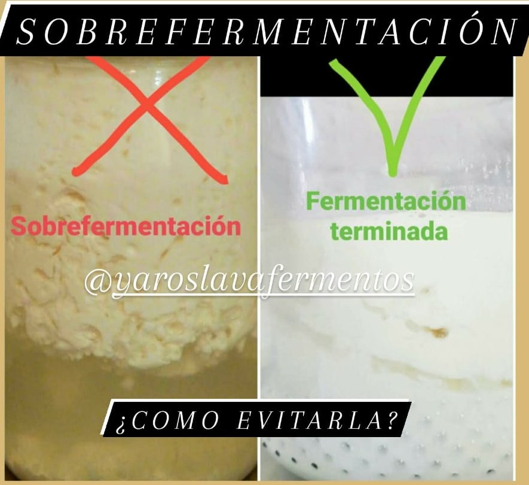

Lo esencial
El resumen de lo más importante. Si recién recibiste tus nódulos, parte por aquí.
Siempre a temperatura ambiente
Entre 15 °C y 30 °C los microorganismos se mantienen en óptimas condiciones. Fuera de ese rango algunas cepas desaparecen.
No se refrigeran ni se congelan
Con el frío mueren los microorganismos menos resistentes y no se recuperan.
No se lavan nunca
Si por algún motivo hiciera falta, jamás con agua de la llave: el cloro mata las bacterias del kéfir.
Siempre en leche
Los nódulos viven en leche. No se cambia su medio por agua ni por bebidas vegetales.
Frasco tapado
El kéfir no necesita oxígeno. Solo deja libre cerca de un 25% del frasco por el gas que se genera.
Utensilios
Se recomienda evitar el metal. El acero inoxidable de buena calidad no da problemas, pero ante la duda es mejor no usarlo.
Leche poco procesada
Puede ser de cualquier mamífero, lo menos procesada posible y sin agregados.
Tiempos y cantidad
Cada cuánto cambiar la leche y cuántos nódulos usar.
Proporción
150 gramos de nódulos por 1 litro de leche. Si hace mucho calor, se puede bajar a 100 gramos.
Cuándo está listo
Cuando aparecen algunos hilitos de suero, líneas y burbujas. Se revuelve para unir suero y cuajada, y se cuela. Eso es el kéfir.
Qué leche usar
El kéfir se alimenta de la lactosa, y eso define qué leches le sirven.
La mejor: leche fresca
De vaca, de cabra o de otro mamífero. Mientras menos procesada, mejor. En el grupo suelen funcionar bien las leches enteras no reconstituidas.
Entera, semidescremada o descremada
La diferencia está en la grasa, no en la lactosa, así que todas sirven. Con descremada el resultado puede quedar algo más líquido y más ácido.
Sin lactosa: no se recomienda
A esa leche se le agrega lactasa, la enzima que rompe la lactosa. El kéfir ya contiene lactasa y hace ese mismo trabajo, así que no es necesaria y es poco natural para los nódulos.
Leche en polvo: con cuidado
Cuesta encontrar una que sirva. Debe ser realmente leche de vaca y no "bebida láctea", sin agregados. Se prepara con agua sin cloro, con un par de medidas extra, y se pone a los nódulos ya fría.
Si eres intolerante a la lactosa: empieza de a poco, deja fermentar entre 24 y 36 horas y, ante cualquier duda, consulta con tu médico.
↑ Volver al menúSobrefermentación
Un poco de suero es normal. Mucho suero separado de la cuajada indica que el cultivo se pasó.

Suele ocurrir por mucho tiempo, mucho calor o demasiados nódulos para la cantidad de leche. Ten en cuenta que los nódulos crecen: si nunca has retirado, probablemente tienes más que antes. Para corregirlo:
- Reduce los nódulos prácticamente a la mitad.
- Usa más leche.
- Deja el frasco en el lugar más fresco de la casa, lejos de la estufa.
- Revisa a las 12 horas. Si está listo, cuélalo. Si aún no tiene suero y se nota que le falta, déjalo hasta las 24 horas, pero no más.
- Usa una leche lo menos adulterada posible.
La primera vez es normal que pase. Los nódulos sienten el cambio de casa, de leche, de frasco y hasta del aire. Por lo general después se adaptan.
↑ Volver al menúCuándo hay que botarlo
En este grupo se privilegia el buen cultivo, el buen cuidado y la seguridad alimentaria.
Un cultivo dañado no se revive
Si ocurre algo de lo siguiente, se bota todo, se desinfecta el frasco y se consiguen nódulos sanos y activos:
- Estuvo abandonado varios días sin colar. Pasadas las 48 horas el cultivo ya sufre cambios.
- Tiene capas o una nata en la superficie, por ejemplo amarilla. Es señal de contaminación, sin importar el olor.
- Huele a vinagre o a queso. Significa que otras bacterias se apoderaron del cultivo y dejó de ser kéfir.
No todas las contaminaciones se ven a simple vista, y no basta con que no huela a podrido. Hacer bien el proceso después no elimina la contaminación: aunque parezca que los nódulos fermentan y reviven, su composición ya es otra. Con las bacterias no se juega.
Preguntas y respuestas
Las dudas que más se repiten en el grupo.
¿El kéfir es lo mismo que el yogurt?
No. Son fermentos distintos. El yogurt necesita calor para fermentar y en él intervienen solo dos tipos de bacterias. El kéfir fermenta a temperatura ambiente y en él participan entre 11 y 25 cepas de bacterias, además de tres o cuatro levaduras probióticas.
Mi kéfir "se corta". ¿Está malo?
No necesariamente. El kéfir es leche fermentada, y la señal de que está listo es justamente que aparezcan suero, líneas y burbujas. Se revuelve para unir suero y cuajada, y se cuela.
Lo que no está bien es que se separe mucho suero. Eso es sobrefermentación y se corrige ajustando tiempo, temperatura y cantidad de nódulos.
Me regalaron nódulos y la primera vez quedó puro suero. ¿Qué hice mal?
Probablemente nada. La primera vez suele pasar porque los nódulos resienten el cambio de casa, de leche y de ambiente. Normalmente se adaptan. Si se repite siempre, sigue los pasos de la sección de sobrefermentación.
¿Cuántos nódulos uso por litro?
150 gramos por 1 litro de leche. Con temperaturas muy altas se puede bajar a 100 gramos.
¿Cada cuánto cambio la leche?
Depende del efecto que busques: 12 horas da un efecto laxante, 24 horas un efecto neutro y 36 horas favorece un tránsito más lento. Lo habitual es cada 24 horas. En días de calor fermenta más rápido, así que conviene revisar antes.
¿Puedo guardarlos en el refrigerador o congelarlos?
No. Con el frío mueren los microorganismos menos resistentes y no se recuperan. Los nódulos van siempre a temperatura ambiente, entre 15 °C y 30 °C.
¿Tengo que lavar los nódulos?
No, nunca. Y si por algún motivo lo necesitaran, jamás con agua de la llave, porque el cloro mata las bacterias del kéfir.
¿El frasco va tapado o destapado?
Tapado. El kéfir no necesita oxígeno. Solo hay que dejar vacío cerca de un 25% del frasco por el gas que se genera.
¿Puedo usar colador o cuchara de metal?
Se recomienda evitar los utensilios metálicos. Con acero inoxidable de buena calidad no hay problema, pero ante la duda es mejor usar otro material.
¿Sirve la leche sin lactosa?
No se recomienda. El kéfir se alimenta de lactosa y él mismo contiene lactasa, la enzima que la descompone. Si eres intolerante, empieza de a poco, fermenta entre 24 y 36 horas y consulta con tu médico ante cualquier duda.
¿Y la leche descremada o en polvo?
La descremada y la semidescremada sirven, aunque el kéfir puede quedar más líquido y más ácido.
La leche en polvo es difícil: tiene que ser leche de vaca real, sin agregados y no "bebida láctea". Se prepara con agua sin cloro, con un par de medidas extra, y se agrega a los nódulos ya fría.
¿Puedo ponerlos en agua o en bebida vegetal?
No. Los nódulos de kéfir de leche deben estar siempre en leche.
Dejé los nódulos varios días sin colar. ¿Los puedo recuperar?
No. Un cultivo abandonado por varios días se bota completo y el frasco se desinfecta. Aunque después parezca que vuelve a fermentar, ya no es un kéfir seguro.
Tiene una nata o capa arriba, pero no huele mal. ¿Sirve?
No. Las capas son señal de contaminación sin importar el olor. Pueden ser levaduras, hongos, mohos u otras bacterias, y a simple vista no se puede saber cuáles. Incluso cuando no son dañinas, el kéfir original ya se perdió. Esos cultivos después "caen mal" y provocan gases u otras molestias.
Huele a vinagre o a queso. ¿Es normal?
No. El kéfir es una simbiosis de bacterias y levaduras en proporciones definidas. El olor a vinagre indica que se llenó de bacterias acéticas, y el olor a queso que predominan bacterias propias de los quesos. En ambos casos dejó de ser kéfir y lo recomendado es botarlo y conseguir un cultivo sano.
¿Cómo consigo nódulos?
Pídelos en el grupo indicando tu comuna o ciudad. Los integrantes los comparten o los intercambian, muchas veces por un litro de leche.
¿Aún no estás en el grupo?
Resolvemos dudas, compartimos nódulos y cuidamos el buen cultivo entre todos.
Unirme a Kefir de Leche Chile